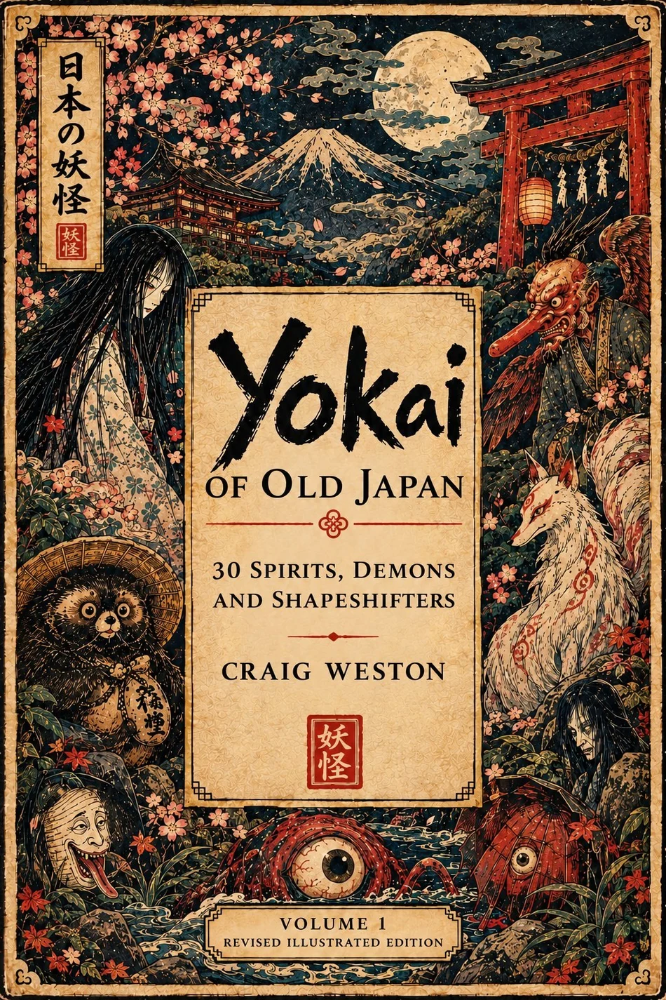

Books for the
curious mind.
One shelf is for designing products people can actually use. The other contains Japanese ghosts, legendary warriors and assorted creatures who probably wouldn’t pass a usability test.
Explore the collection ↓UX is Dead.
Long Live UX.
Useful design thinking for anyone who has ever built something clever and then discovered nobody wanted it.
EXPLORE THE BOOK ↗Japan: History,
Myth & Tradition.
Illustrated encounters with spirits, samurai, ancient customs and some truly magnificent troublemakers.
BROWSE THE JAPAN COLLECTION ↗
Follow your
curiosity.
Not sure where to begin? Pick the rabbit hole that interests you. I’ll point you towards a good place to start.
What are you in the mood for?
Just a reading suggestion. No accounts, tracking quiz or mysterious algorithms.
UX Is Dead, Long Live UX
An approachable guide to understanding people, questioning assumptions and making digital products genuinely useful. Start here if you like ideas that work beyond the next trend.
Find your next
fascination.
Read, explore, collect.
Browse the design book, the folklore collection and the rest of my catalogue on Amazon. Consider yourself warned: one question about a yōkai can become an entire evening.